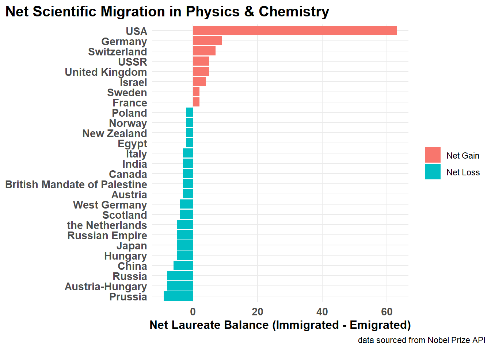
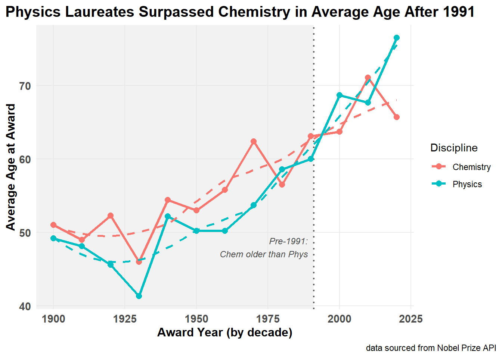
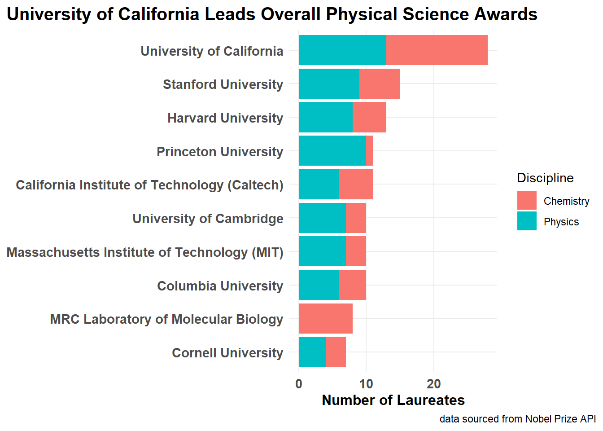
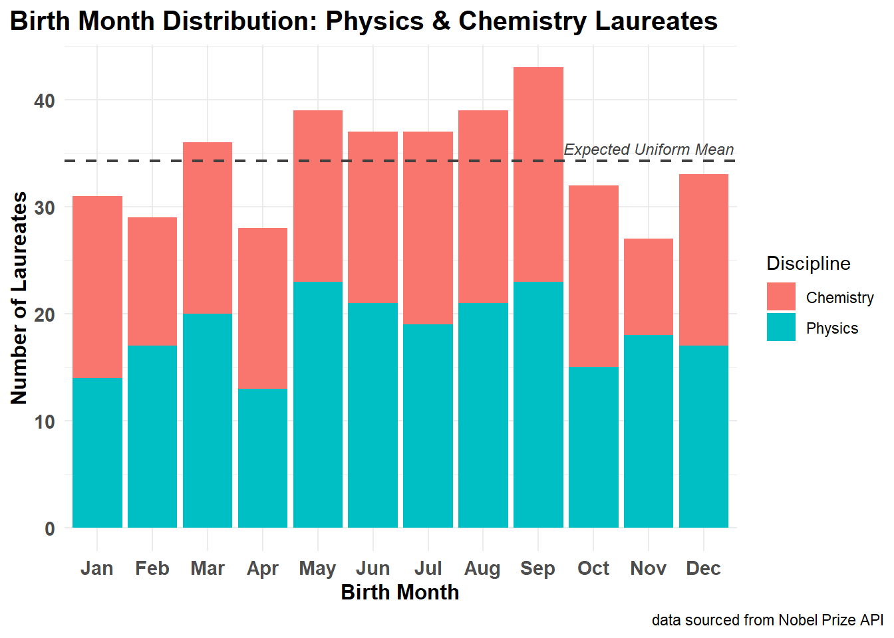
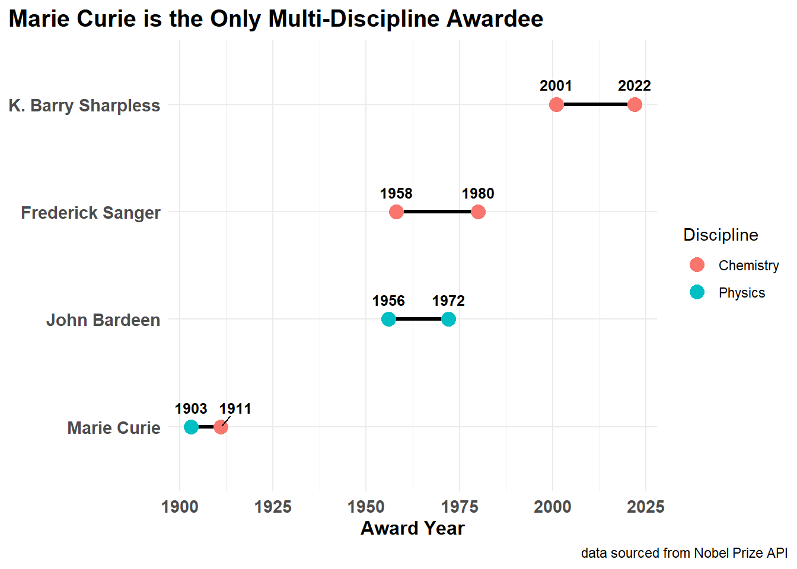

Using the Version 2.1 REST API, laureate records across Physics and Chemistry are ingested. The raw data are parsed from hierarchical, nested JSON documents into rectangular, tidy data frames using the jsonlite(Ooms 2023) and tidyverse(Wickham et al. 2019) ecosystems.
Beyond standard frequency counts, this study investigates five data-driven questions examining scientific migration (“brain drain”), age distributions at time of recognition, institutional concentration of awards, seasonal birth distributions, and repeat prize winners.
Approach
Ingest API data
Retrieve records from the https://api.nobelprize.org/2.1/laureates endpoint using httr2
Parse raw JSON strings into structured R objects using jsonlite::fromJSON.
Reshape and tidy nested structures
Unnest nested array columns into tidy formats
Investigate five research questions
Which countries have experienced the largest net “brain drain” versus “brain gain” among Physics and Chemistry laureates?
How has the average age of laureates at the time of their award changed over the decades in Physics compared to Chemistry?
Which universities or research institutions have produced the most Nobel laureates across Physics and Chemistry?
Does the distribution of birth months among Physics and Chemistry laureates show evidence of a “relative age effect”?
Which individuals have won multiple Nobel prizes in Physics or Chemistry (or crossed between both), and what was the time gap between their awards?
Data is ingested from the Nobel Prize Developer Zone API using an HTTP request. The API restricts output to 25 items by default, so a limit parameter of 1,400 was added to the query URL to retrieve all historical laureates in a single pull.
To prevent repeated calls to the live API during rendering, a function was built using tryCatch() to cache the data locally. Initially, saving the parsed JSON payload directly to an Apache Parquet file caused an error because the list-columns inside the raw data frame were too deeply nested for Parquet’s schema. This was resolved by saving the object as a local .rds file using saveRDS(). On subsequent runs, the function checks for the presence of this file and loads it directly from disk.
The raw JSON data contains nested data frames and list-columns that must be flattened before analysis. The data was first cleaned by extracting the English text fields and unnesting the nobelPrizes column, then filtering solely for prizes awarded in Physics and Chemistry.
Handling the affiliations column presented a challenge: some laureates had no recorded institution, while others had multiple appointments across different universities. Unnesting this column directly caused row duplication and indexing errors. To fix this, purrr::map_chr() was used to check whether each row was a valid data frame with a name column before pulling the primary English name. If no valid affiliation existed, the function safely returned NA_character_.
Next, date metrics were derived. Rather than relying on lubridate::ymd() (which generated warnings on 11 historical records containing only four-digit years) base R’s format(as.Date(birth_date), "%b") and month.abb were used. This cleanly extracts birth months as an ordered factor while preserving missing records as NA without throwing warnings. Finally, each laureate’s age at the time of award and award decade were calculated using basic date arithmetic.
Which countries have experienced the largest net “brain drain” versus “brain gain” among Physics and Chemistry laureates?
Scientific migration was measured by comparing each laureate’s birth country against their affiliated country at the time of the award. Only laureates whose birth country differed from their affiliation country were evaluated. Emigration counts (“brain drain”) and immigration counts (“brain gain”) were calculated and joined together to find the net balance for each country.
Code
mobile_laureates <- laureates_tidy |>filter(!is.na(birth_country), !is.na(affiliation_country)) |>filter(birth_country != affiliation_country)drain <- mobile_laureates |>count(country = birth_country, name ="emigrated")gain <- mobile_laureates |>count(country = affiliation_country, name ="immigrated")net_mobility <-full_join(gain, drain, by ="country") |>replace_na(list(immigrated =0, emigrated =0)) |>mutate(net_gain = immigrated - emigrated) |>arrange(desc(net_gain))top_gainers <-head(net_mobility, 5) |>mutate(Status ="Top Net Gainers")top_losers <-tail(net_mobility, 5) |>arrange(net_gain) |>mutate(Status ="Top Net Losers")
q1_plot_data <- net_mobility |>filter(abs(net_gain) >=2) |>mutate(type =if_else(net_gain >0, "Net Gain", "Net Loss"),country =fct_reorder(country, net_gain) )q1_plot_data |>ggplot(aes(x = net_gain, y = country, fill = type)) +geom_col() +labs(title ="The United States is the Primary Destination for Migrating Laureates",caption ="data sourced from Nobel Prize API",x ="Net Laureate Balance (Immigrated - Emigrated)",y =NULL,fill =NULL ) +theme_standard() +theme(panel.grid.minor =element_blank() )

The United States is the Primary Destination for Migrating Laureates
The analysis reveals a heavy concentration of talent flowing toward the United States, which had a net gain of 67 laureates. Conversely, historical territories like Prussia (-9) and Austria-Hungary (-8) experienced the greatest net losses. Modern nations such as China (-6) and the Netherlands (-5) also exhibited net losses of laureates to institutions abroad.
Question 2
How has the average age of laureates at the time of their award changed over the decades in Physics compared to Chemistry?
To assess whether the timeline between discovery and recognition has lengthened over time, the average age of laureates was grouped by award decade and discipline.
A key challenge was identifying the exact inflection point where Physics laureates became older on average than Chemistry laureates. By pivoting annual mean ages wider and filtering for years where Physics exceeded Chemistry, the precise crossover year was determined to be 1991 and within 1980.
A shaded rectangle was added to the background of the plot using annotate("rect", ...) to visually separate the pre-‘r crossover_year’ period from the modern era.
Code
age_trends |>ggplot(aes(x = decade, y = mean_age, color = category, group = category)) +annotate("rect",xmin =-Inf,xmax = crossover_year,ymin =-Inf,ymax =Inf,alpha =0.2 ) +geom_vline(xintercept = crossover_year, linetype ="dotted", linewidth =0.8 ) +annotate("text",x = crossover_year -2,y =48,label =paste0("Pre-", crossover_year, ":\nChem older than Phys"),hjust =1,size =3.2,fontface ="italic" ) +geom_line(linewidth =1.1) +geom_point(size =2.5) +geom_smooth(method ="loess", se =FALSE, linetype ="dashed", alpha =0.5) +labs(title ="Physics Laureates Surpassed Chemistry in Average Age After 1991",caption ="data sourced from Nobel Prize API",x ="Award Year (by decade)",y ="Average Age at Award",color ="Discipline" ) +theme_standard() +theme(panel.grid.minor =element_blank() )

Physics Laureates Surpassed Chemistry in Average Age After 1991
Prior to the 1980s, Chemistry laureates were consistently older on average than physicists. Beginning in the 1980, Physics recipient ages began exceeding Chemistry in multiple decades (reaching an average of 76.5 in the 2020s compared to 65.7 for Chemistry), reflecting the lengthened experimental timelines required to verify modern physical theories.
Question 3
Which universities or research institutions have produced the most Nobel laureates across Physics and Chemistry?
Institutional affiliations were aggregated to determine which universities and research facilities have produced the highest volume of Nobel laureates across Physics and Chemistry. Laureates without institutional affiliations were filtered out, and the total counts for the top 10 institutions were calculated.
Code
institution_counts <- laureates_tidy |>filter(!is.na(affiliation_name)) |>count(affiliation_name, category, name ="awards")top_institutions_overall <- institution_counts |>group_by(affiliation_name) |>summarize(total_awards =sum(awards), .groups ="drop") |>slice_max(total_awards, n =10, with_ties =FALSE)
Code
top_10_table <- institution_counts |>semi_join(top_institutions_overall, by ="affiliation_name") |>pivot_wider(names_from = category, values_from = awards, values_fill =0) |>mutate(Total = Chemistry + Physics) |>arrange(desc(Total))uc_total <- top_10_table |>filter(str_detect(affiliation_name, "University of California")) |>pull(Total)uc_chem <- top_10_table |>filter(str_detect(affiliation_name, "University of California")) |>pull(Chemistry)uc_phys <- top_10_table |>filter(str_detect(affiliation_name, "University of California")) |>pull(Physics)mrc_chem <- top_10_table |>filter(str_detect(affiliation_name, "MRC Laboratory")) |>pull(Chemistry)knitr::kable( top_10_table,col.names =c("Institution", "Chemistry", "Physics", "Total Awards"),caption ="Top 10 Research Institutions by Nobel Laureates in Physical Sciences")
Top 10 Research Institutions by Nobel Laureates in Physical Sciences
Institution
Chemistry
Physics
Total Awards
University of California
15
13
28
Stanford University
6
9
15
Harvard University
5
8
13
California Institute of Technology (Caltech)
5
6
11
Princeton University
1
10
11
Columbia University
4
6
10
Massachusetts Institute of Technology (MIT)
3
7
10
University of Cambridge
3
7
10
MRC Laboratory of Molecular Biology
8
0
8
Cornell University
3
4
7
Code
q3_plot_data <- institution_counts |>semi_join(top_institutions_overall, by ="affiliation_name") |>mutate(affiliation_name =fct_reorder(affiliation_name, awards, .fun = sum))q3_plot_data |>ggplot(aes(x = awards, y = affiliation_name, fill = category)) +geom_col() +labs(title ="University of California Leads Overall Physical Science Awards",caption ="data sourced from Nobel Prize API",x ="Number of Laureates",y =NULL,fill ="Discipline" ) +theme_standard() +theme(panel.grid.minor =element_blank() )

University of California Leads Overall Physical Science Awards
The top 10 institutions are dominated by American and British universities. The University of California system produced the most laureates overall (28 total), showing a balanced distribution between Chemistry (15) and Physics (13). Other institutions showed strong specialization: Stanford, Harvard, and Princeton produced primarily Physics laureates, while the MRC Laboratory of Molecular Biology in Cambridge produced 8 Chemistry laureates and zero in Physics.
Question 4
Does the distribution of birth months among Physics and Chemistry laureates show evidence of a “relative age effect”?
To test whether a “relative age effect” exists among top physical scientists, birth month frequencies were tallied across the calendar year. The observed percentage of births per month was compared against a theoretical uniform distribution of approximately 8.33% (or roughly 34.3 laureates per month).
Birth Month Distribution of Physical Sciences Laureates
Month
Total Laureates
Observed %
Expected % (Uniform)
Difference %
Jan
32
7.6
8.3
-0.7
Feb
29
6.9
8.3
-1.4
Mar
37
8.8
8.3
0.5
Apr
29
6.9
8.3
-1.4
May
39
9.2
8.3
0.9
Jun
39
9.2
8.3
0.9
Jul
38
9.0
8.3
0.7
Aug
40
9.5
8.3
1.2
Sep
43
10.2
8.3
1.9
Oct
34
8.1
8.3
-0.2
Nov
28
6.6
8.3
-1.7
Dec
34
8.1
8.3
-0.2
Code
expected_per_month <-sum(monthly_births$count) /12monthly_births |>ggplot(aes(x = birth_month, y = count, fill = category)) +geom_col() +geom_hline(yintercept = expected_per_month,linetype ="dashed",color ="#404040",linewidth =0.8 ) +annotate("text",x =11.0,y = expected_per_month +1.2,label ="Expected Uniform Mean",color ="#404040",size =3.2,fontface ="italic" ) +labs(title ="Birth Month Shows No Evidence of a Relative Age Effect",caption ="data sourced from Nobel Prize API",x ="Birth Month",y ="Number of Laureates",fill ="Discipline" ) +theme_standard()

Birth Month Shows No Evidence of a Relative Age Effect
Code
chisq_res <-chisq.test(monthly_totals$total)chisq_table <- broom::tidy(chisq_res) |>select(`p_value`= p.value,`dof`= parameter,`method`= method)min_month <- monthly_totals |>slice_min(total, n =1)max_month <- monthly_totals |>slice_max(total, n =1)chi_stat <-round(chisq_res$statistic, 2)chi_pval <-round(chisq_res$p.value, 2)knitr::kable(chisq_table, caption ="Goodness-of-Fit Test for Monthly Birth Uniformity")
Goodness-of-Fit Test for Monthly Birth Uniformity
p_value
dof
method
0.7525672
11
Chi-squared test for given probabilities
The birth month distribution remained relatively uniform, ranging from a low of 27 28 laureates in Nov to a high of 43 in Sep. A Chi-square goodness-of-fit test was conducted on the monthly totals, yielding (\(\chi^2 = 7.55, p = 0.75\)). Because \(p > 0.05\), the null hypothesis is not rejected; the sample provides no statistically significant evidence of a relative age effect among Nobel laureates in Physics and Chemistry.
Question 5
Which individuals have won multiple Nobel prizes in Physics or Chemistry (or crossed between both), and what was the time gap between their awards?
Repeat winners were identified by grouping the tidy data set by laureate ID and name and filtering for individuals with more than one award. The time gap between prizes was calculated by taking the difference between the maximum and minimum award years.
Repeat and Cross-Disciplinary Laureates in Physics and Chemistry
Laureate
Prizes Won
Discipline(s)
Years Awarded
Gap (Years)
Marie Curie
2
Physics & Chemistry
1903, 1911
8
John Bardeen
2
Physics & Physics
1956, 1972
16
K. Barry Sharpless
2
Chemistry & Chemistry
2001, 2022
21
Frederick Sanger
2
Chemistry & Chemistry
1958, 1980
22
Code
library(ggrepel)p5_data <- laureates_tidy |>semi_join(repeat_laureates, by ="id") |>arrange(known_name, award_year)p5_data |>ggplot(aes(x = award_year, y =fct_reorder(known_name, award_year, min))) +geom_line(aes(group = known_name), linewidth =1.2) +geom_point(aes(color = category), size =4) +geom_text_repel(aes(label = award_year),vjust =-1.2,hjust =0.5,size =3.3, fontface ="bold") +labs(title ="Marie Curie is the Only Multi-Discipline Awardee",caption ="data sourced from Nobel Prize API",x ="Award Year",y =NULL,color ="Discipline" ) +theme_standard()

Marie Curie is the Only Multi-Discipline Awardee
Only 4 individuals have ever won multiple Nobel prizes in the physical sciences. Of these 4, Marie Curie is the only laureate to cross disciplines, winning in Physics in 1903 and Chemistry in 1911 with an 8-year gap. The remaining three individuals repeated within their specific fields: John Bardeen won two Physics prizes across a 16-year gap, while Frederick Sanger and K. Barry Sharpless each won two Chemistry prizes across gaps of 22 and 21 years, respectively.
Findings and Recommendations
This analysis demonstrates the process of pulling semi-structured JSON data from a REST API, flattening complex list-columns, and conducting comparative analysis across Physics and Chemistry.
Overall, the data shows that physical science Nobel prizes have historically concentrated in American and British institutions, with the United States serving as the primary beneficiary of international scientific migration. Additionally, the average age of recipients has increased significantly over the last century, with Physics overtaking Chemistry in average recipient age after 1991. Finally, while multiple awards are extremely rare and achieved by only four individuals, calendar birth month has no significant impact on Nobel-level achievement.
To extend this work, historical population data could be joined to normalize migration figures on a per-capita basis, testing whether smaller nations like Switzerland or the Netherlands produce more laureates relative to their population size. Furthermore, incorporating the prize amount data from the API could allow for an analysis of inflation-adjusted prize winnings across disciplines over time.
Generative AI Usage
Generative artificial intelligence was consulted during the development of this pipeline. Specifically, Gemini 3.8 Flash via the Google web interface was utilized for constructing defensive data extraction patterns with purrr::map_chr(), troubleshooting date parsing logic, and assisting with the annotate("rect", ...) background shading logic.
Wickham, Hadley, Mara Averick, Jennifer Bryan, et al. 2019. “Welcome to the tidyverse.”Journal of Open Source Software 4 (43): 1686. https://doi.org/10.21105/joss.01686.